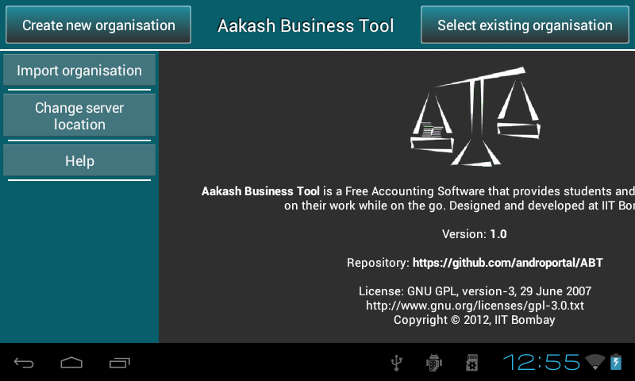

2.9. Export/Import organisation
2.9.1. Export organisation
- Go to Master menu > Export organisation.
- As the user clicks on Export organisation, it prompts the location where
the organisation data/backup is exported.
- Location of the exported data : C:\ABT\abt\.
2.9.2. Import organisation
- To import same organisation in another windows machine, you just need to copy export folder to C:\ABT\abt\, provided ABT is installed.
- Options menu or left side drawer present in the first page of ABT
include import organisation option.

- Just click on Import organisation, it will show all available exported organisationnames and respected financial years to import.

- Select organisation name and it’s financial year which you would like to
import and click on Import button.